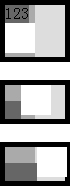

HT1002: IE Opera 对 OBJECT 元素之前的 'non-breaking space' 处理有误
标准参考
"non-breaking space" 即常见的 " " 或 " " 实体，它生成一个类似空格的间隔，但如其名字所示，浏览器不会以这个实体引发换行。
关于 " " 的详细信息，请参考 HTML4.01 规范 9.3.2 中的内容。
关于 HTML的实体字符 的详细信息，请参考 HTML4.01 规范 24.2.1 中的内容。
问题描述
IE6 IE7 IE8(Q) 中当 OBJECT 元素之前的行内文本由 " " 构成，且 " " 宽度之和小于容器宽度时，OBJECT 元素不发生折行；而 " " 宽度之和超过容器时，OBJECT 元素会折行显示。而在 IE8(S) Opera 中，出现上述情况时，OBJECT 元素始终不会发生折行。
造成的影响
OBJECT 元素常用于显示 Flash 及一些特殊组件，而 IE Opera 对 OBJECT 元素之前的行内文本为 " " 时的怪异处理会造成 OBJECT 位置显示差异。
受影响的浏览器
| IE6 IE7 IE8 Opera | 对 OBJECT 元素之前的 'non-breaking space' 处理有误。 |
|---|
问题分析
当 OBJECT 元素之前的行内文本由 " " 构成时，在 IE Opera 中，OBJECT 元素的位置可能会出现异常。
分析以下代码：
<div style="width:60px; border:5px solid black; background:#DDD;">
<div style="width:30px; background:#AAA;">
<span style="background:#666;">123</span><object type="application/x-shockwave-flash" style="width:30px; height:30px;"></object>
</div>
</div>
<br />
<div style="width:60px; border:5px solid black; background:#DDD;">
<div style="width:30px; background:#AAA;">
<span style="background:#666;"> </span><object type="application/x-shockwave-flash" style="width:30px; height:30px;"></object>
</div>
</div>
<br />
<div style="width:60px; border:5px solid black; background:#DDD;">
<div style="width:30px; background:#AAA;">
<span style="background:#666;"> </span><object type="application/x-shockwave-flash" style="width:30px; height:30px;"></object>
</div>
</div>
上面代码分为三组，每组均为 DIV 容器内包含一个行内 SPAN 及一个 OBJECT，容器的宽度设置为刚好不够在一行上容纳 SPAN 及 OBJECT 。每组代码的区别为 SPAN 元素的内容，
- 第一组为普通文本；
- 第二组为两个 " " ；
- 第三组为四个 " " 。
其中第三组中的4个 " " 构成的 SPAN 元素的宽度就已经超出了容器 DIV 的宽度设定。
这段代码在不同浏览器中运行结果如下（ 忽略 IE6 IE7 IE8(Q) 中 width/height 的设定值可能被其内容撑大的问题 ）：
| IE6 IE7 IE8(Q) | IE8(S) Opera | Firefox Chrome Safari |
|---|---|---|
 |
 |
可见，当 OBJECT 元素与其之前的行内文本的宽度之和超过其容器时，
- 在 IE6 IE7 IE8(Q) 中，当 OBJECT 之前的行内文本由 " " 构成，且 " " 宽度之和小于容器宽度时，OBJECT元素不发生折行；而 " " 宽度之和超过容器时，OBJECT元素会折行显示；
- 在 IE8(S) Opera 中，当OBJECT之前的行内文本由 " " 构成，且 " " 宽度之和小于容器宽度时，OBJECT元素不发生折行；而 " " 宽度之和超过容器时，OBJECT 元素仍然不会折行显示；
- 在 Firefox Chrome Safari 中，不管 OBJECT 元素之前为何种文本，在宽度不够时 OBJECT 均会按照W3C规范的要求而折行。
解决方案
合理的设置容器及 OBJECT 元素的宽度。
- 若需要 OBJECT 元素不发生折行，则为容器设置 "white-space:nowrap" ；
- 若需要 OBJECT 元素折行，则在 OBJECT 元素之前加入明确的换行符 "<br />" 。
参见
知识库
相关问题
测试环境
| 操作系统版本: | Windows 7 Ultimate build 7600 |
|---|---|
| 浏览器版本: |
IE6 IE7 IE8 Firefox 3.6.3 Chrome 5.0.396.0 dev Safari 4.0.5 Opera 10.53 |
| 测试页面: | objectnbsp.html |
| 本文更新时间: | 2010-08-09 |
关键字
OBJECT nbsp non-breaking space inline 空格